AI personalization là gì? Khác quy tắc thế nào?
AI personalization (cá nhân hóa bằng AI) là việc sử dụng trí tuệ nhân tạo để lựa chọn hoặc điều chỉnh nội dung, đề xuất sản phẩm và trải nghiệm dựa trên dữ liệu khách hàng cùng ngữ cảnh tương tác. Khác với cá nhân hóa theo quy tắc do con người thiết lập sẵn, AI có thể học từ dữ liệu để dự đoán lựa chọn phù hợp với từng người dùng. Hiệu quả cần được đánh giá qua phản hồi và hành vi thực tế, bởi đề xuất phù hợp ở một thời điểm có thể không còn phù hợp khi nhu cầu thay đổi. Bài viết này làm rõ bốn mức cá nhân hóa, cách đo hiệu quả và cách kiểm soát vòng lặp gợi ý khiến khách hàng liên tục nhận những lựa chọn giống nhau.
- Đăng ngày
- Cập nhật

Tóm tắt nhanh
- AI personalization là dùng mô hình để xếp gợi ý theo mức phù hợp ước tính. Chèn tên, phân khúc và quy tắc theo hành vi là ba mức đầu, không cần AI.
- Cách phối hợp đúng là quy tắc lọc trước, mô hình xếp sau: quy tắc giữ tồn kho, vùng giao và điều kiện ưu đãi; mô hình xử lý phần khó viết thành điều kiện.
- McKinsey ghi nhận mức tăng doanh thu thường thấy là 10 đến 15%, nhưng dải theo từng doanh nghiệp trải từ 5 đến 25%. Hệ gợi ý còn tự thu hẹp danh mục nếu không đo độ phủ.
- Luật Bảo vệ dữ liệu cá nhân có hiệu lực từ 1/1/2026 yêu cầu đồng ý theo từng mục đích; Điều 28 khoản 8 quy định riêng cho cá nhân hóa quảng cáo.
Mục lục bài viết14 phần
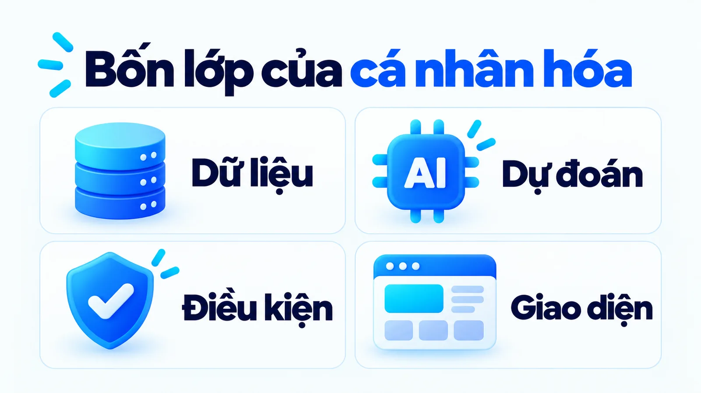
AI personalization là gì và hoạt động theo cơ chế nào?
AI personalization là gì? Đó là cách dùng AI để lựa chọn hoặc điều chỉnh nội dung, gợi ý và trải nghiệm theo dữ liệu về khách hàng và ngữ cảnh. Theo Salesforce, hệ thống phân tích các tín hiệu như hành vi duyệt, lịch sử mua và tương tác để ước tính lựa chọn nào phù hợp hơn với từng người.
Cơ chế cụ thể phụ thuộc hệ thống, loại dữ liệu và mục tiêu được chọn, nhưng hình dạng chung thì giống nhau. Trong AI Marketing, một luồng cá nhân hóa đi qua bốn lớp nối tiếp nhau.
- Lớp dữ liệu: ghi lại điều đã biết về khách và về sản phẩm.
- Lớp dự đoán: ước tính mức phù hợp của từng lựa chọn. Đây là chỗ duy nhất có AI.
- Lớp điều kiện kinh doanh: loại bỏ lựa chọn doanh nghiệp không cung cấp được, như hết hàng, ngoài vùng giao hoặc không đủ điều kiện ưu đãi.
- Lớp giao diện: đưa gợi ý tới khách và cho khách đổi tiêu chí hoặc bỏ qua.
Lớp thứ ba là lớp hay bị bỏ nhất, và bỏ nó tạo ra loại lỗi khó chịu nhất với khách: gợi ý đúng về mô hình nhưng sai về thực tế. Khách bấm vào một sản phẩm được hệ thống nói là hợp với mình rồi phát hiện nó đã hết hàng từ tuần trước.
Người làm marketing phải xác định phù hợp nghĩa là gì trong từng điểm chạm, vì mô hình không tự biết. Ở trang hướng dẫn, phù hợp có thể là thông tin giúp khách chọn đúng. Ở trang sản phẩm, phù hợp có thể là danh sách đáp ứng cả nhu cầu lẫn khả năng cung cấp. Nếu hệ thống tối ưu lượt nhấp trong khi doanh nghiệp cần đơn phù hợp, hai mục tiêu sẽ lệch nhau và lệch ngày càng xa.
Bốn mức cá nhân hóa, bạn đang ở mức nào?
Ba mức đầu không cần mô hình dự đoán, và đây là chỗ nhiều đội nhầm khi mới tìm hiểu AI personalization là gì. Phần lớn thứ được gọi là cá nhân hóa bằng AI trên thị trường Việt Nam dừng ở mức hai, tức chia khách theo nhóm.
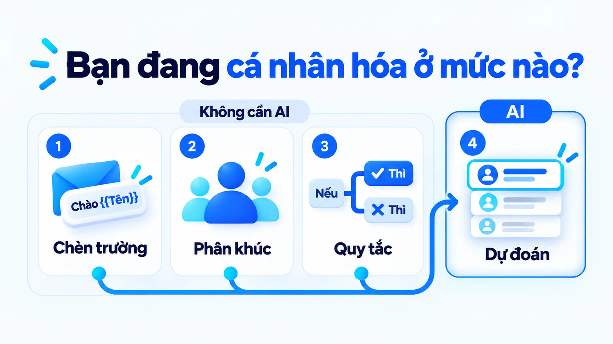
- Mức 1, chèn trường: gọi tên khách trong email, điền tên thành phố vào tiêu đề.
- Mức 2, phân khúc: chia khách thành nhóm rồi gửi nội dung khác nhau cho từng nhóm.
- Mức 3, quy tắc theo hành vi: nếu khách xem ba lần mà chưa mua thì hiện ưu đãi, điều kiện do người viết ra.
- Mức 4, mô hình dự đoán: xếp lựa chọn theo mức phù hợp ước tính từ nhiều tín hiệu. Chỉ mức này mới là AI personalization.
Cả bốn mức đều hợp lệ và đều tạo ra giá trị. Vấn đề chỉ phát sinh khi mức hai được báo cáo lên ban giám đốc như mức bốn, vì lúc đó ngân sách được duyệt cho một thứ và kết quả được kỳ vọng theo một thứ khác. Hỏi một câu là phân biệt được: điều kiện hiển thị do người viết ra hay do mô hình tính ra?
Với hầu hết SME (doanh nghiệp vừa và nhỏ) Việt Nam đang bán vài trăm mã hàng, mức hai và mức ba đã đủ tạo phần lớn giá trị, với chi phí bằng một phần nhỏ. Mức bốn đáng đầu tư khi danh mục lớn tới mức không ai viết nổi điều kiện cho từng nhóm, hoặc khi lượng khách đủ nhiều để có dữ liệu lịch sử sạch.
Cá nhân hóa bằng AI và theo quy tắc khác nhau ở đâu?
Khác ở chỗ ai viết ra điều kiện. Cá nhân hóa theo quy tắc dùng điều kiện do người thiết kế đặt, chẳng hạn khách chọn đi trong ngày thì hiển thị nhóm đồ gọn nhẹ. Mô hình dự đoán kết hợp nhiều tín hiệu để xếp lựa chọn theo mức phù hợp ước tính, kể cả những quan hệ mà người không nghĩ ra để viết thành điều kiện.
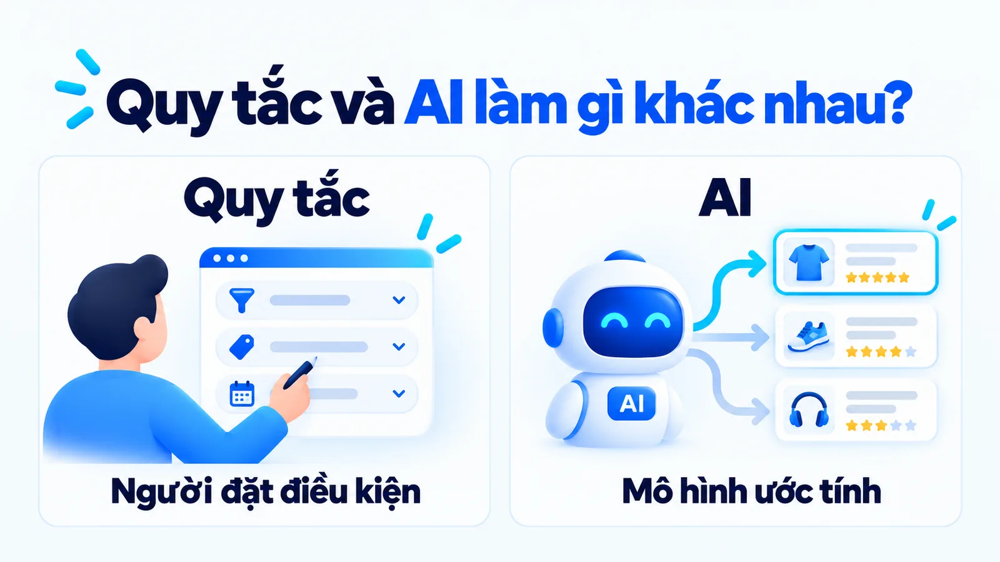
| Tiêu chí | Theo quy tắc | Bằng mô hình AI |
|---|---|---|
| Ai viết điều kiện | Người thiết kế đặt sẵn | Mô hình tính từ nhiều tín hiệu |
| Dữ liệu cần có | Ít, miễn điều kiện rõ | Lịch sử đủ nhiều và sạch |
| Giải thích cho khách | Trả lời được ngay | Thường chỉ biết là phù hợp nhất |
| Phù hợp khi | Danh mục nhỏ, điều kiện ổn định | Danh mục lớn, khó viết hết điều kiện |
Đánh đổi lớn nhất là khả năng giải thích. Với quy tắc, khi khách hỏi vì sao tôi thấy sản phẩm này, đội hỗ trợ trả lời được ngay. Với mô hình, câu trả lời thường chỉ là hệ thống tính ra nó phù hợp nhất. Tôi ưu tiên khả năng giải thích vì sao khách thấy một gợi ý trước khi coi mức tự động hóa là thành công, vì phần giải thích đó chính là thứ đội hỗ trợ cần khi có khiếu nại.
Quy tắc lọc trước, mô hình xếp sau
Hai cách phối hợp được, và cách phối hợp đúng có thứ tự rõ ràng.
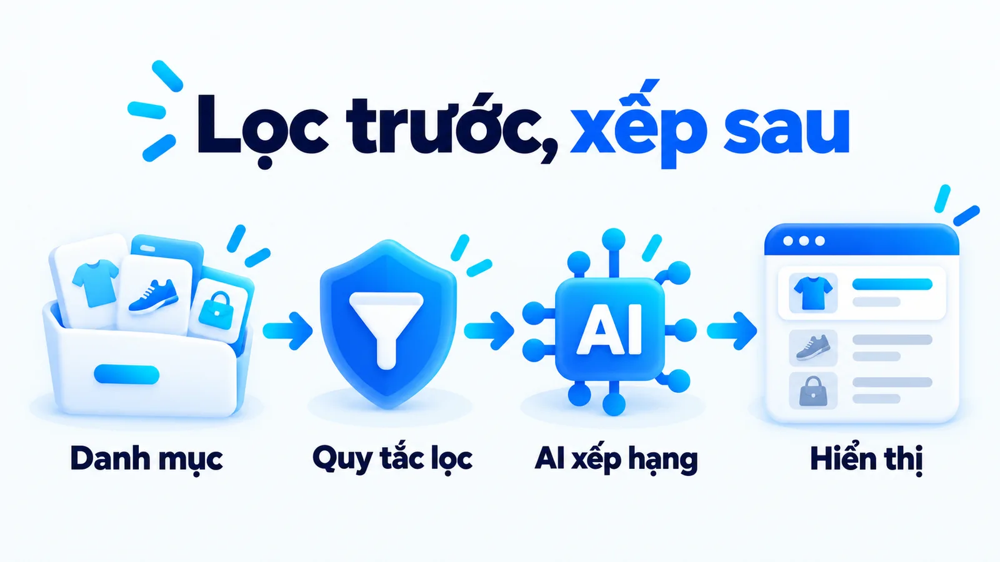
Quy tắc giữ những gì không được phép sai: còn hàng, trong vùng giao, đúng điều kiện ưu đãi. Mô hình xếp những lựa chọn đã qua lọc. Đảo thứ tự hai bước này là lỗi hay gặp khi đội mới triển khai: để mô hình xếp trước rồi mới lọc, khách sẽ thấy danh sách bị hụt chỗ và thứ tự nhảy cóc khó hiểu. Có dùng AI không đồng nghĩa mọi điều kiện được giao cho mô hình quyết định.
Con số nào đáng tin về lợi ích của cá nhân hóa?
Con số đáng tin nhất là một dải, không phải một điểm. Bộ số hay được trích nhất đến từ bài phân tích của McKinsey công bố ngày 12 tháng 11 năm 2021.
Báo cáo ghi nhận 71% người tiêu dùng mong đợi doanh nghiệp tương tác theo cách cá nhân hóa, và 76% cảm thấy khó chịu khi điều đó không xảy ra. Nhóm doanh nghiệp tăng trưởng nhanh có phần doanh thu đến từ cá nhân hóa nhiều hơn khoảng 40% so với nhóm trung bình.
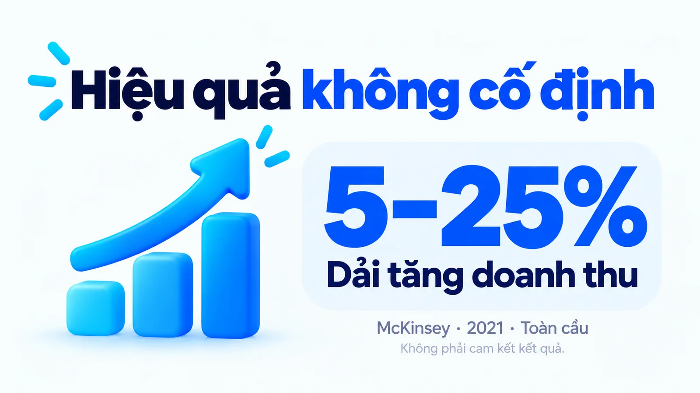
Con số quan trọng nhất lại là con số ít được trích nhất: mức tăng doanh thu thường thấy là 10 đến 15%, nhưng dải theo từng doanh nghiệp trải từ 5 đến 25%. Khoảng cách gấp năm lần giữa hai đầu dải nói rằng cá nhân hóa không có một mức hiệu quả cố định. Ai hứa với bạn một con số cụ thể cho trường hợp của bạn là đang bỏ qua chính dữ liệu họ trích.
Cần đọc đúng phạm vi: đây là số liệu năm 2021, không phải số đo tại Việt Nam và không phải cam kết kết quả. Hành vi người mua Việt Nam trên sàn thương mại điện tử và qua tin nhắn khác đáng kể với thị trường mà báo cáo này lấy dữ liệu. Dùng nó để biết hướng và biết dải dao động, không dùng để làm mục tiêu trong kế hoạch.
Ví dụ SME: hai khách cùng xem lều dã ngoại
Xét một cửa hàng thiết bị dã ngoại có hai khách cùng xem trang lều trong một buổi tối. Hành vi duyệt giống nhau không có nghĩa nhu cầu giống nhau.
Đây là ví dụ giả định
Cửa hàng dã ngoại, Lan và Minh dùng để giải thích cơ chế, không phải chiến dịch đã triển khai hoặc kết quả tăng trưởng của một khách hàng thật.
Lan khai muốn hành lý gọn nhẹ cho chuyến đi ngắn; Minh quan tâm không gian rộng cho gia đình bốn người. Chỉ dựa vào trang đã xem, cửa hàng chưa phân biệt được hai nhu cầu này, vì hai người có hành vi duyệt gần như giống hệt nhau.
Một quy tắc có thể dùng lựa chọn khách chủ động cung cấp để hiển thị nhóm sản phẩm tương ứng. Hệ thống AI dùng thêm lịch sử xem, lịch sử mua và đặc điểm sản phẩm để xếp những lựa chọn trong nhóm đó. Hai loại tín hiệu này không có cùng mức chắc chắn; cách phân biệt chúng có trong bài Zero-party data là gì? Khác first-party data thế nào?
Hai tình huống làm hỏng dự đoán. Thứ nhất, Lan xem lều rộng không có nghĩa sở thích gọn nhẹ đã hết hiệu lực; Lan có thể đang so sánh giúp bạn. Thứ hai, Minh đổi kế hoạch thành đi một mình vào tuần sau. Nếu hệ thống đã gán nhãn khách gia đình và không có cách gỡ, nhãn đó sẽ bám theo Minh trong nhiều tháng.
Cách xử lý không nằm ở mô hình tốt hơn mà nằm ở giao diện. Một trải nghiệm hữu ích cho phép khách đổi tiêu chí hoặc bỏ qua gợi ý ngay tại chỗ, và mọi nhãn suy ra từ hành vi nên có hạn dùng thay vì tồn tại vĩnh viễn. Dự đoán cần được hiểu là ước tính, không phải bản xác nhận ý định.
Dữ liệu nhiều có làm gợi ý tốt hơn không?
Không tự động. Chất lượng dữ liệu quan trọng hơn khối lượng, và có ba lỗi phổ biến làm hỏng gợi ý mà không hiện ra trên bất kỳ báo cáo nào.
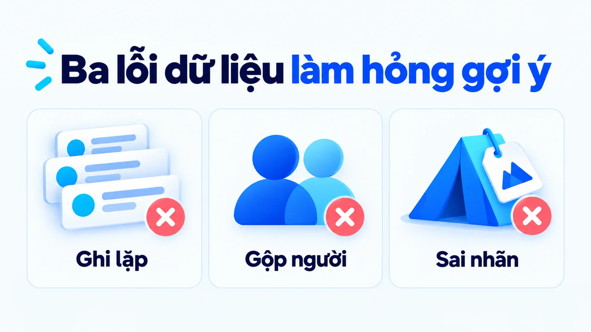
Ghi lặp sự kiện làm một lượt xem được đếm thành hai, nên mức quan tâm bị thổi phồng. Gộp người xảy ra khi nhiều người dùng chung một thiết bị hoặc tài khoản, nên sở thích của người này bị gán cho người kia. Sai nhãn sản phẩm là lỗi thứ ba, và nó đáng chú ý nhất với SME vì rẻ nhất để sửa mà hay bị bỏ qua nhất.
Mô hình xếp hạng theo thuộc tính sản phẩm trong danh mục, nên nếu chiếc lều hai người bị gắn nhãn nhóm bốn người, mô hình sẽ xếp đúng theo nhãn mà vẫn ra gợi ý sai. Dọn danh mục là việc không cần công nghệ và thường tạo ra cải thiện lớn hơn việc đổi mô hình.
Một người xem nhiều lần cũng chưa chắc quan tâm nhiều hơn người xem ít. Có thể họ tìm mãi mà chưa hiểu thông tin, hoặc trang tải chậm nên họ bấm lại. Dữ liệu phải được đặt trong bối cảnh trước khi dùng làm tín hiệu ưu tiên.
Khách mới chưa có lịch sử thì gợi ý thế nào?
Có bốn cách, xếp theo mức độ trung thực với điều doanh nghiệp thực sự biết: hiện danh mục chung, hỏi trực tiếp, gợi ý theo ngữ cảnh của phiên truy cập, hoặc gợi ý theo nhóm khách tương tự.
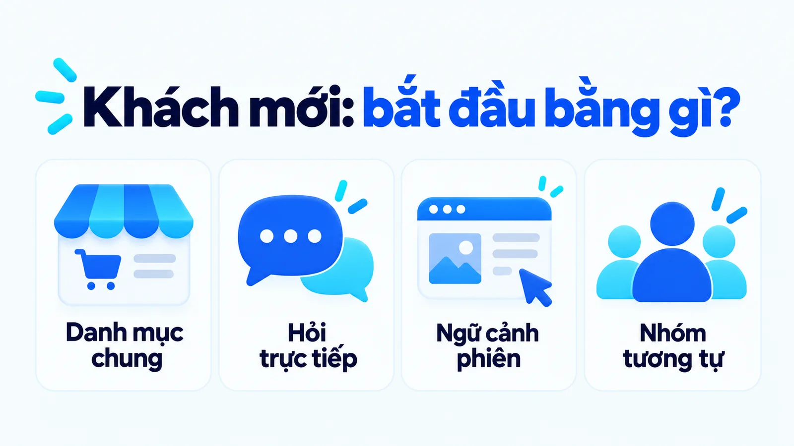
Cách trung thực nhất thường cũng là cách hiệu quả nhất: hỏi thẳng một câu ngắn về nhu cầu. Một câu trả lời khách tự khai chắc chắn hơn mọi suy đoán từ hành vi ban đầu, và nó không tạo cảm giác doanh nghiệp đã biết điều khách chưa cung cấp.
Tài liệu Amazon Personalize cũng cho thấy dữ liệu mới ảnh hưởng tới gợi ý ra sao còn tùy loại mô hình và cách nạp dữ liệu. Có thêm một sự kiện không đồng nghĩa mọi mô hình lập tức được huấn luyện lại với dữ liệu đó.
Vì sao gợi ý càng ngày càng giống nhau?
Vì hệ gợi ý tạo ra chính dữ liệu dùng để huấn luyện nó ở vòng sau. Nghiên cứu của Mansoury và cộng sự, công bố ngày 25 tháng 7 năm 2020 và trình bày tại hội nghị CIKM 2020, mô phỏng 20 vòng tương tác giữa người dùng và hệ gợi ý trên bộ dữ liệu MovieLens 1M, gồm 6.040 người dùng và 3.706 bộ phim, với ba thuật toán khác nhau.
Kết quả giống nhau ở cả ba: độ phổ biến trung bình của sản phẩm được gợi ý tăng dần qua từng vòng.
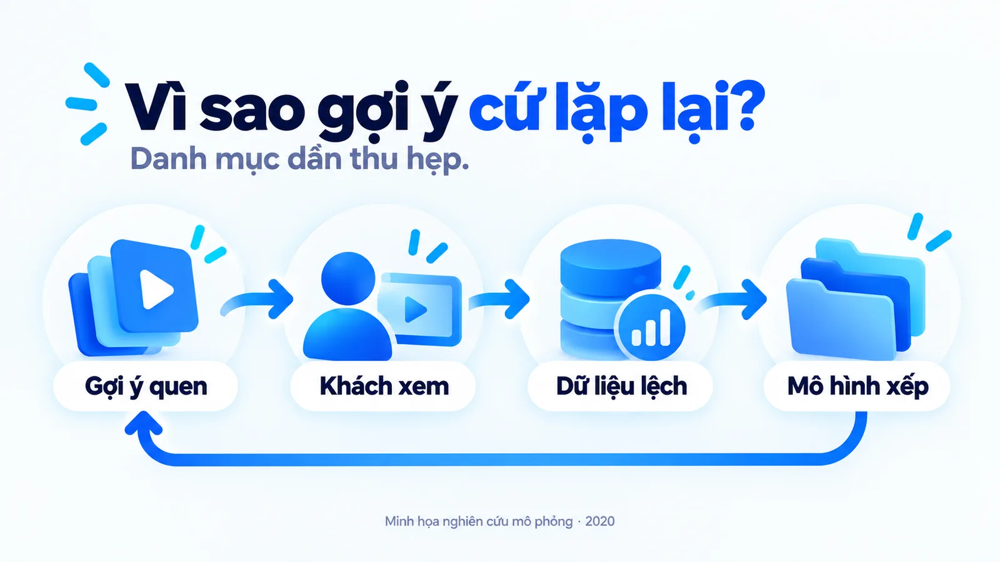
Nghiên cứu đó đo thêm ba hệ quả. Độ phủ danh mục, tức tỉ lệ sản phẩm xuất hiện ít nhất một lần trong danh sách gợi ý, giảm dần qua các vòng.
Hồ sơ sở thích mà hệ thống ghi nhận cho từng người lệch dần khỏi sở thích ban đầu; nhóm tác giả nói rõ đây là cách hệ thống biểu diễn sở thích, không phải sở thích thật của người dùng thay đổi. Và nhóm người dùng ít hơn trong dữ liệu, ở đây là người dùng nữ, chịu độ lệch lớn hơn hẳn nhóm đông hơn.
Dịch sang ngôn ngữ kinh doanh: hệ gợi ý của bạn đang từ từ thu hẹp danh mục của chính bạn. Những mã hàng ít được gợi ý sẽ ít được xem, nên ít có dữ liệu, nên càng ít được gợi ý. Hàng mới nhập chịu thiệt nặng nhất. Nhóm khách nhỏ hơn, ví dụ khách ở tỉnh xa hoặc khách mua cho mục đích ít phổ biến, nhận gợi ý lệch nhiều hơn nhóm khách chính.
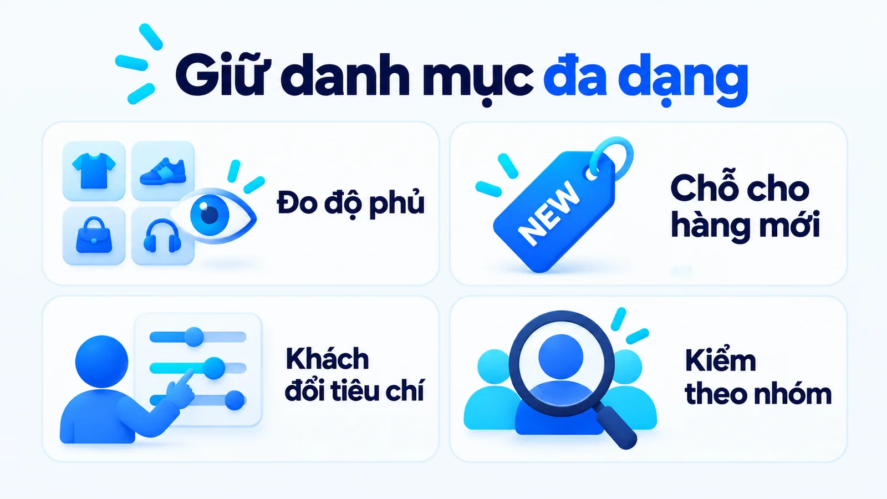
Chỉ số cần đặt lên bảng theo dõi là độ phủ danh mục: mỗi tháng đếm bao nhiêu phần trăm mã hàng từng được gợi ý ít nhất một lần. Nếu con số này giảm đều qua các tháng trong khi doanh thu vẫn tăng, bạn đang tăng doanh thu bằng cách bán ngày càng ít loại hàng hơn, và điều đó sẽ chạm trần.
Dành cố định một hai vị trí trong danh sách cho sản phẩm chưa đủ dữ liệu là cách rẻ nhất để cắt vòng lặp. Ba cách còn lại là cho khách đổi tiêu chí ngay trên giao diện và kiểm tra chất lượng gợi ý riêng cho từng nhóm khách, thay vì chỉ nhìn số trung bình.
Chọn nội dung khác gì với tạo lời giới thiệu?
Khác ở tiêu chí kiểm tra, nên không gộp vào một lượt duyệt được. AI có thể chọn một thẻ sản phẩm có sẵn, hoặc tạo bản nháp lời giới thiệu riêng cho khách. Bước chọn liên quan tới mức phù hợp; bước tạo liên quan tới độ đúng của lời giới thiệu.
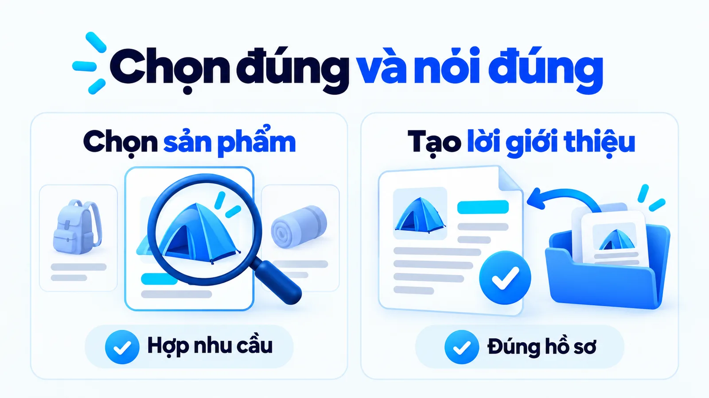
Nếu hệ thống chọn một chiếc lều hợp nhu cầu gọn nhẹ, lời giới thiệu vẫn phải dựa vào hồ sơ đúng dòng sản phẩm. AI không được tự thêm khả năng chịu thời tiết chỉ vì câu đó nghe hợp với một chuyến đi. Sai ở bước chọn thì khách thấy sản phẩm không liên quan và bỏ qua; sai ở bước tạo thì khách nhận một cam kết doanh nghiệp không thực hiện được, và hậu quả nặng hơn nhiều.
Vì vậy bước tạo cần một điểm duyệt có thẩm quyền, như trình bày trong bài Human-in-the-loop là gì.
Cách xưng hô và lời giải thích cũng cần giữ bản sắc thương hiệu. Cá nhân hóa không có nghĩa mỗi khách nhận một giọng nói hoàn toàn khác hoặc một điều kiện ưu đãi chưa được doanh nghiệp chấp nhận. Bài Brand voice và tone of voice khác gì nhau giúp giữ giọng thương hiệu khi thay cách diễn đạt. Một câu gọi đúng tên khách chưa đủ tạo trải nghiệm phù hợp nếu nội dung gợi ý vẫn sai nhu cầu.
Luật Việt Nam yêu cầu gì khi cá nhân hóa?
Yêu cầu sự đồng ý rõ ràng, và các nghĩa vụ này đã có hiệu lực. Luật Bảo vệ dữ liệu cá nhân số 91/2025/QH15 được Quốc hội thông qua ngày 26 tháng 6 năm 2025, gồm 5 chương 39 điều, có hiệu lực từ ngày 1 tháng 1 năm 2026. Điều 28 quy định về bảo vệ dữ liệu cá nhân trong kinh doanh dịch vụ quảng cáo, và đây là điều luật mà mọi đội làm cá nhân hóa cần đọc.
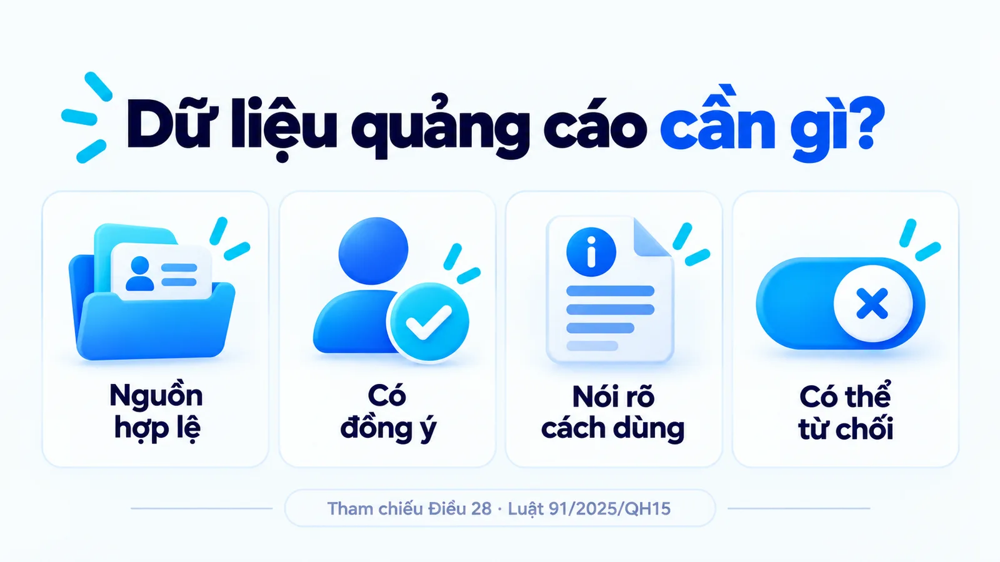
- Nguồn hợp lệ: tổ chức kinh doanh dịch vụ quảng cáo chỉ được dùng dữ liệu thu thập qua hoạt động kinh doanh của mình hoặc được chuyển giao theo thỏa thuận.
- Có đồng ý: xử lý dữ liệu của khách để quảng cáo phải được khách đồng ý.
- Nói rõ cách dùng: khách phải biết rõ nội dung, phương thức, hình thức và tần suất giới thiệu sản phẩm trước khi đồng ý.
- Có thể từ chối: phải có cách để khách từ chối nhận quảng cáo, phải ngừng khi khách yêu cầu và tuân thủ quy định chống tin nhắn rác.
Khoản 8 của Điều 28 nói thẳng về cá nhân hóa: ai dùng dữ liệu cá nhân để quảng cáo theo hành vi, có mục tiêu cụ thể hoặc cá nhân hóa quảng cáo thì chỉ được thu thập dữ liệu qua việc theo dõi website, ứng dụng khi khách đồng ý. Doanh nghiệp còn phải cho khách từ chối chia sẻ dữ liệu, xác định thời gian lưu trữ và xóa dữ liệu khi không còn cần thiết.
Nghĩa vụ báo tần suất là nghĩa vụ ít đội chuẩn bị nhất. Ô đồng ý không thể chỉ ghi chung chung rằng chúng tôi có thể gửi thông tin; nó phải nói rõ gửi cái gì, qua kênh nào và bao lâu một lần. Với một hệ cá nhân hóa gửi tin theo hành vi, tần suất thay đổi theo từng khách, nên phần này cần được thiết kế từ đầu chứ không vá sau.
Mức phạt theo Điều 8
Mức phạt hành chính tối đa với tổ chức là 5% doanh thu năm trước liền kề khi vi phạm quy định chuyển dữ liệu cá nhân xuyên biên giới, và 3 tỷ đồng với các vi phạm khác. Mua bán dữ liệu cá nhân bị cấm tại Điều 7, trừ trường hợp luật có quy định khác, và bị phạt tối đa 10 lần khoản thu có được từ vi phạm.
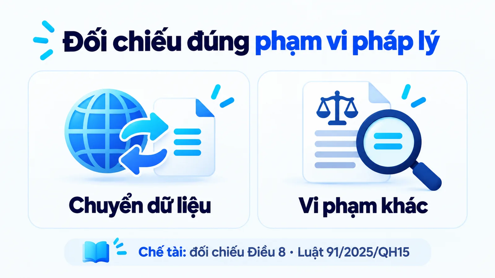
Cá nhân vi phạm chịu mức phạt tối đa bằng một nửa mức của tổ chức, và tùy tính chất, mức độ, người vi phạm có thể bị truy cứu trách nhiệm hình sự.
Điểm thực tế nhất rút ra cho một SME: tách mục đích ngay lúc thu thập dữ liệu. Điều 9 yêu cầu sự đồng ý thể hiện cho từng mục đích và coi im lặng không phải là đồng ý. Xin số điện thoại để giao hàng thì không nên mặc nhiên dùng số đó để gọi quảng cáo, vì đó là hai mục đích khác nhau.
Đây là phần tóm lược để định hướng, không phải tư vấn pháp lý; hãy đối chiếu toàn văn luật, các văn bản hướng dẫn và hỏi ý kiến chuyên môn trước khi áp dụng.
Đo hiệu quả cá nhân hóa bằng chỉ số nào?
Bằng nhóm chỉ số, không bằng một chỉ số. Lượt nhấp vào khối gợi ý cho biết khách có bấm hay không, chưa cho biết hệ thống có giúp khách chọn đúng hay không. Một khối gợi ý gây tò mò có thể có lượt nhấp cao trong khi tỉ lệ đổi trả cũng cao.
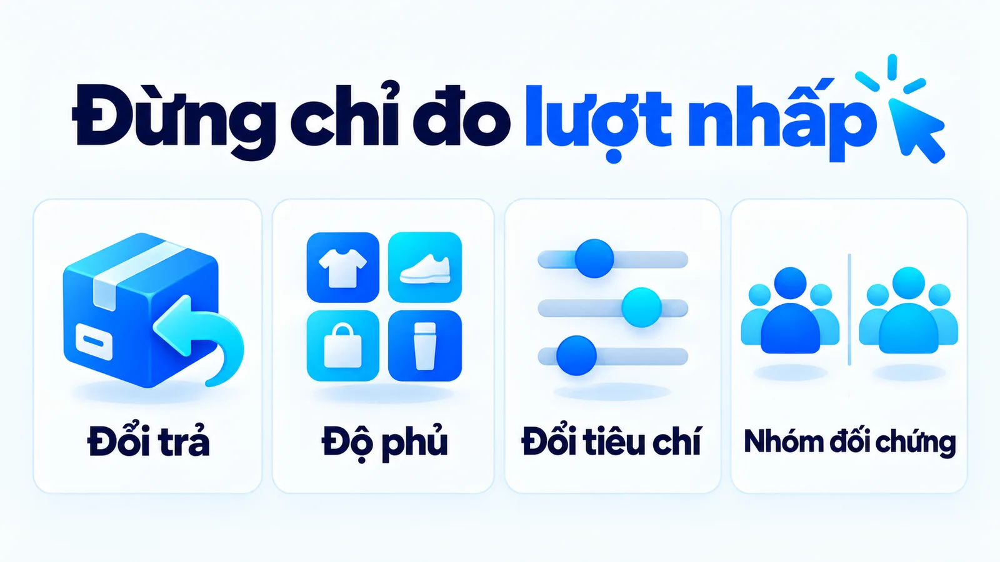
Bốn chỉ số nên đọc cùng nhau. Tỉ lệ đổi trả và lý do đổi trả cho biết gợi ý có đúng nhu cầu thật hay không. Độ phủ danh mục cảnh báo vòng lặp phản hồi. Tỉ lệ khách bấm đổi tiêu chí hoặc bỏ qua cho biết gợi ý ban đầu lệch bao nhiêu. Và mọi so sánh cần một nhóm đối chứng cùng kỳ, cùng kênh.
Lượt nhấp vào gợi ý là một hành động nhỏ trên đường mua, nên cần đọc như micro conversion chứ không phải kết quả cuối.
Nhóm đối chứng là phần hay bị bỏ nhất và cũng là phần khiến mọi kết luận còn lại mất giá trị. Khác biệt giữa hai giai đoạn có thể đến từ giá, tồn kho, kênh khách và mùa vụ chứ không phải từ cách gợi ý. Nếu muốn kết luận tác động thật, hãy giữ một phần khách nhận trải nghiệm cũ trong cùng khoảng thời gian, thay vì so tháng này với tháng trước.
Chi phí thật của cá nhân hóa nằm ở đâu?
Ở bốn khoản: làm sạch dữ liệu, tích hợp hệ thống, sản xuất nội dung và xử lý gợi ý sai. Ba khoản đầu phát sinh trước khi có gợi ý đầu tiên, nên nhiều dự án cá nhân hóa trông rẻ trong bản kế hoạch mà đội ngũ đuối ngay tháng thứ hai.
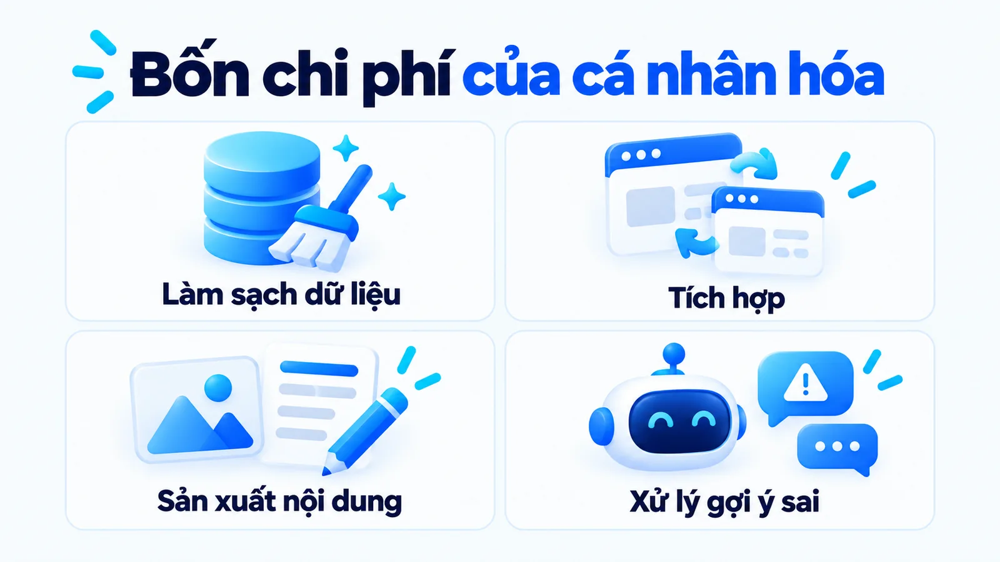
Khoản hay bị quên nhất là sản xuất nội dung. Có gợi ý riêng cho từng nhóm khách thì phải có mô tả riêng, ảnh riêng và lời giới thiệu riêng cho từng nhóm đó. Một hệ thống chia khách thành sáu nhóm cần gấp sáu lần nội dung, và đây là chi phí người chứ không phải chi phí phần mềm.
Khoản thứ tư khó định lượng nhưng có thật: xử lý gợi ý sai. Nó gồm thời gian trả lời khách, thời gian sửa nhãn, và phần uy tín mất đi khi cùng một gợi ý sai lặp lại nhiều lần với cùng một người. Chưa có một tỉ lệ tăng chuyển đổi cố định cho mọi SME, nên kết quả tốt phải được xét cùng nguồn lực bỏ ra và cùng chất lượng phục vụ.
Bắt đầu cá nhân hóa từ đâu?
Từ một điểm chạm và một câu hỏi, không từ một hệ thống. Bốn bước đầu trong năm bước dưới đây không cần mô hình dự đoán, và với phần lớn SME chúng đã đủ tạo ra phần lớn giá trị. Cách nối các bước thành một luồng có điểm kiểm tra được trình bày trong bài AI workflow là gì.
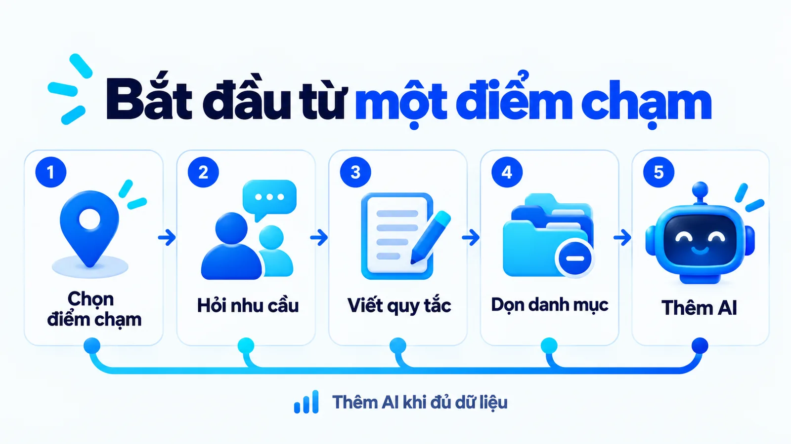
Bước 1: Chọn một điểm chạm
Chọn một chỗ khách đang phải tự tìm lâu, như trang danh mục hoặc email sau mua. Ghi lại số nền của điểm chạm đó trước khi thay đổi bất cứ điều gì, để sau này có cái mà so.
Bước 2: Hỏi khách một câu về nhu cầu
Một câu hỏi ngắn tạo ra dữ liệu chắc chắn hơn mọi suy đoán từ hành vi. Nếu bạn nói rõ dùng câu trả lời đó để làm gì, bước này đồng thời giải quyết luôn phần đồng ý theo Điều 28.
Bước 3: Viết quy tắc cho các nhóm chính
Dùng câu trả lời của khách để hiển thị nhóm sản phẩm tương ứng, kèm quy tắc lọc tồn kho và vùng giao. Đây là mức ba, rẻ và giải thích được ngay với khách.
Bước 4: Dọn dữ liệu danh mục
Sửa nhãn, thuộc tính và mô tả sản phẩm cho đúng. Việc này không cần công nghệ, chỉ cần thời gian, nhưng nó quyết định chất lượng của mọi bước phía sau.
Bước 5: Thêm mô hình khi đủ dữ liệu
Chỉ thêm mô hình dự đoán khi danh mục đã sạch và lượng khách đủ lớn, đặt nó sau bước lọc, giữ một nhóm đối chứng và theo dõi độ phủ danh mục từ tháng đầu. Nhảy thẳng vào bước này khi danh mục còn sai nhãn là cách nhanh nhất có một hệ gợi ý sai một cách tự tin.
Ba sai lầm hay gặp khi cá nhân hóa
Gọi phân khúc là AI làm ngân sách được duyệt cho một thứ và kết quả được kỳ vọng theo một thứ khác. Tin dự đoán tuyệt đối khiến nhãn sai bám theo khách nhiều tháng. Bỏ qua sự đồng ý là sai lầm duy nhất có thể dẫn tới xử phạt, nên cần xử lý trước hai sai lầm còn lại.
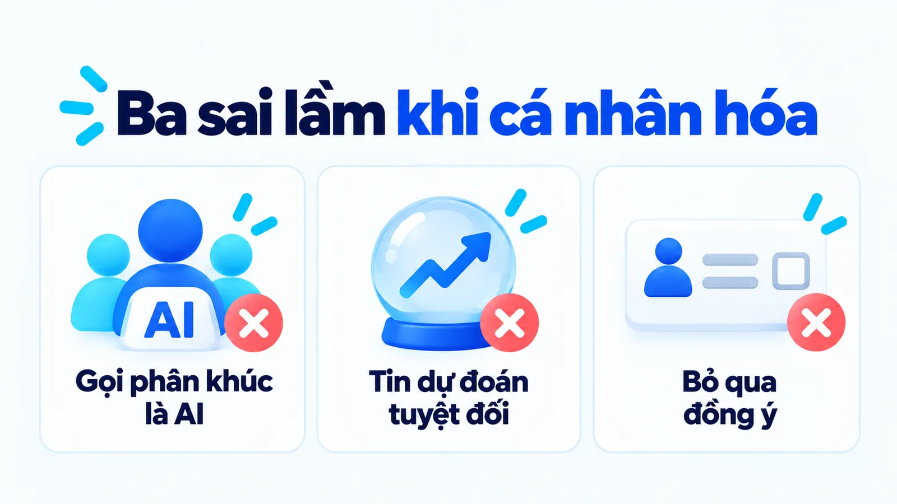
Mô hình không sửa được dữ liệu bẩn, nó chỉ khuếch đại dữ liệu bẩn lên quy mô lớn hơn và làm lỗi khó truy hơn. Vì vậy hãy dọn dữ liệu trước, thêm mô hình sau.
Câu hỏi thường gặp về AI personalization
Chèn tên khách vào email có phải AI personalization không?
Không. Đó là mức một trong bốn mức cá nhân hóa và không cần AI. Cá nhân hóa bằng AI là mức bốn, khi một mô hình xếp lựa chọn theo mức phù hợp ước tính từ nhiều tín hiệu, thay vì theo điều kiện do người viết ra. Cách phân biệt nhanh là hỏi: điều kiện hiển thị do người viết ra hay do mô hình tự tính ra?
SME có ít dữ liệu có nên bỏ quy tắc để dùng AI không?
Không cần thay toàn bộ. Cách phối hợp đúng là quy tắc lọc trước rồi mô hình xếp sau: quy tắc giữ những gì không được sai như tồn kho và vùng giao, mô hình xử lý phần khó viết thành điều kiện. Khi danh mục còn nhỏ và dữ liệu còn ít, một quy tắc rõ ràng thường đủ dùng, rẻ hơn nhiều và giải thích được với khách.
Cá nhân hóa giúp tăng doanh thu bao nhiêu phần trăm?
Không có một con số cố định. McKinsey năm 2021 ghi nhận mức tăng thường thấy là 10 đến 15%, nhưng dải theo từng doanh nghiệp trải từ 5 đến 25%. Khoảng cách gấp năm lần giữa hai đầu dải cho thấy kết quả phụ thuộc ngành hàng, chất lượng dữ liệu và cách triển khai. Đây cũng không phải số đo tại Việt Nam.
Vì sao hệ gợi ý cứ lặp lại mấy sản phẩm quen thuộc?
Vì hệ gợi ý tạo ra chính dữ liệu dùng để huấn luyện nó ở vòng sau. Một nghiên cứu mô phỏng 20 vòng tương tác cho thấy độ phổ biến trung bình của sản phẩm được gợi ý tăng dần, độ phủ danh mục giảm, và nhóm người dùng ít hơn trong dữ liệu chịu độ lệch lớn hơn. Cách xử lý là đo độ phủ danh mục hằng tháng và dành cố định một hai vị trí cho sản phẩm chưa đủ dữ liệu.
Dùng dữ liệu khách để cá nhân hóa quảng cáo có cần xin phép không?
Có. Luật Bảo vệ dữ liệu cá nhân số 91/2025/QH15, hiệu lực từ ngày 1 tháng 1 năm 2026, yêu cầu sự đồng ý cho từng mục đích và coi im lặng không phải là đồng ý. Điều 28 yêu cầu khách biết rõ nội dung, phương thức, hình thức, tần suất giới thiệu sản phẩm và có cách từ chối nhận quảng cáo; khoản 8 yêu cầu riêng với cá nhân hóa quảng cáo là chỉ theo dõi trên website hoặc ứng dụng khi khách đồng ý.
AI có hiểu chắc nhu cầu của từng khách không?
Không. Hệ thống dùng tín hiệu để ước tính, và tín hiệu có thể thiếu, sai hoặc đã thay đổi. Cùng một hành vi duyệt web có thể đến từ hai nhu cầu hoàn toàn khác nhau. Vì vậy khách cần sửa được tiêu chí ngay trên giao diện, mọi nhãn suy ra từ hành vi nên có hạn dùng, và doanh nghiệp cần theo dõi tỉ lệ đổi trả thay vì coi dự đoán là sự thật.
Kết luận: AI personalization là gì và nên bắt đầu thế nào?
Tóm lại, AI personalization là dùng mô hình để xếp gợi ý theo mức phù hợp ước tính, và nó chỉ có giá trị khi gợi ý giúp khách ra quyết định phù hợp hơn trong điều kiện doanh nghiệp phục vụ được. Mục tiêu, dữ liệu, ràng buộc kinh doanh, nghĩa vụ pháp lý và cách đánh giá phải đi cùng nhau.
Hãy bắt đầu từ một điểm chạm, một câu hỏi và một quy tắc rõ, dọn danh mục trước khi thêm mô hình. Xem thêm các bài khác trong chuyên mục AI Marketing hoặc những dự án tôi đã triển khai.